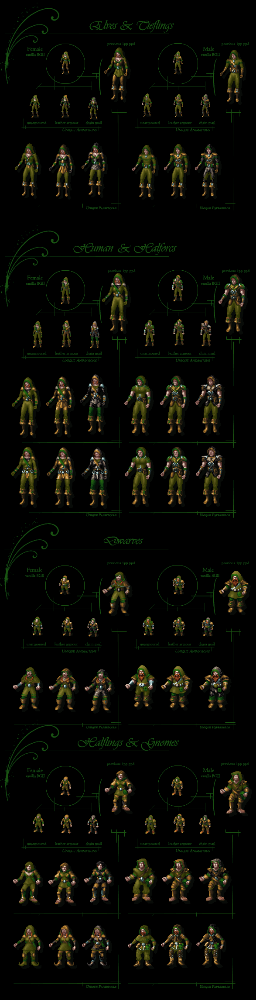

This component will restore full thief animation avatar sequences.
Supported:
BGII SoA, BGII ToB, IWD HoW, IWD TotL, IWD II
with Dwarven Female Avatars installed
Install notes:
It is recommended to install the Avatar switching component after any other mods that alter or introduce items.

1ppv3: Unique Thief Avatars (patch)
This will patch your executable to support full thief animation sequences.
In standard BGII only one armour level of thieves had unique animations (leather armour). Any other armour level would revert to the default unarmoured animation. On the inventory, the first two armour levels had unique paperdolls, anything else would revert to the unarmoured paperdoll.
In other words, you could not have unarmoured thieves that looked like thieves, and if you switched bards to use thief avatars, you could not have chain mail showing up properly.
By contrast, in standard IWD, unarmoured thieves are supported, but chain mail is not - Bards use thief animations by default in IWD, so they could look okay for the first two armour levels, but you can't equip chain mail and have it look right. Note that the game content is directly copied from BGII so even if the first two armour levels *are* supported, their ingame animations are identical (as BGII only had the one).
IWD II supports three armour levels for thieves natively, so this component is unnecessary for IWD II installs. Again the content was simply copied from BGII so the first two look identical to a BGII thief, with the third being the uniform chain mail animation.
1ppv3: Unique Thief Avatars (content)
This will install content for a full thief animation series (unarmoured to plate mail).
Warning: If the patch component is installed without this, your (BGII/IWD HoW) game will crash.
Conversely, if the content is installed without the patch you'd experience:
· Slight changes to the limited thief animation in BGII but nothing else
· Unique thief animations for unarmoured and leather armour in IWD, with chain mail not showing up
· Proper thief animation sequence in IWDII (patch not required)
If installed with the patch, thieves will now have unique animations and paperdolls for the first three armour levels. The plate mail animations (and paperdolls) are copied from cleric and fighter animations (because let's face it, plate mail is not very subtle).
1ppv3: Improved Improved Galactygon's Avatar Switching
Like the name suggests, this is an improved version of my original improved version of Galactygon's avatar appearance tweak (to be found in the BGII Tweakpack).
Basically, what this does is it dynamically changes character animations to fit equipped armour (and then dynamically changes it back when unequipped!). While normally robes would not show up for fighter/cleric/thief animations, and armour would not show up for mage animations, this is circumvented by changing the character animation accordingly while such items are equipped.
If you were using the BGII Tweakpack component, it should be uninstalled before installing this. The component is designed to work with the restored thief avatar series, so it is not recommended as a standalone install.
Due to the properly working thief animations, this foregoes a lot of the scripting my old fix relied upon, while offering superior content.
1ppv3: IWD Avatar Switching
This is an IWD HoW/TotL port of the avatar switching component. As far as I am aware this is the first mod that does this.
Due to IWD's game engine, some parts have to be implemented differently. While the HoW engine supports .EFF files, it does not allow them to trigger spells. Neither can spells directly be linked to an item, because regardless of any parameters they seem to fire continuously (when you'd only want them to do so once). To make matters worse IWD has no main script that is constantly evaluated.
This implementation works around those issues by switching manually through item/innate abilities.
When you equip an item, your avatar will not switch automatically. Instead the item will give you an item ability (click on Item Abilities in the quickbar). If it's necessary to change character appearance (e.g. by equipping robes on a fighter), use this item ability to switch.
As soon as you have done this, an innate ability will appear that resets your character to their base type. The innate will stay available indefinitely until it is used or another armour is equipped and changed into. You can change into and out of the same armour as you desire while it is equipped.
It may not be as convenient as the BGII component but two clicks (about five seconds) definitely beats saving, closing your game, and editing your animation type in NI/Dalekeeper each time you equip a different type of armour.
1ppv3: IWDII Avatar Switching
This is an IWDII port of the avatar switching component.
IWDII's engine supports spells linked to items, so this component is about half-way between the BGII and IWD components.
Items change appearance automatically upon equipping, but due to lack of a persistent script will not change you back to your unarmoured state when you unequip (so if you equip robes on a fighter and unequip them, you'd be stuck with the unarmoured mage animation).
For you to be able to switch back, this adds an innate ability, working exactly like the ones in the IWD install. Exactly as in the IWD component as well, you don't have to use this if you switch from one armour to another.